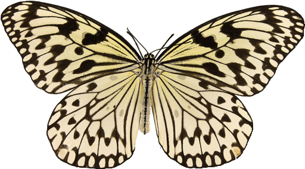
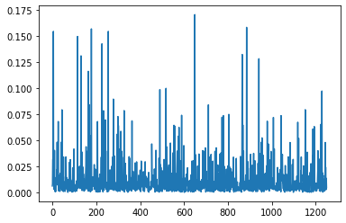
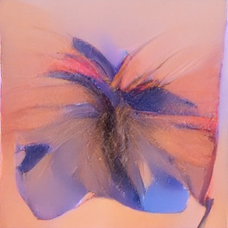
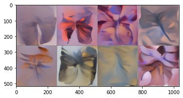
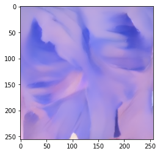

from diffusers import DDPMPipelineLesson 13: Going Deeper with Diffusion Models
The Plan
Load a diffusers pipeline and generate an image
Sampling loop with a new sampler (plus DDIM explanation?)
Fine-tune on a new dataset
Guide with a loss or two (start simple, then CLIP)
Condition on a class
Classifier-free guidance
Latent Diffusion Model
Progressive Distillation
image_pipe = DDPMPipeline.from_pretrained("google/ddpm-celebahq-256");
image_pipe.to("cuda");images = image_pipe().images # Forward method does all the magic (slowly)
print(len(images))
images[0]1image_pipe.schedulerDDPMScheduler {
"_class_name": "DDPMScheduler",
"_diffusers_version": "0.4.2",
"beta_end": 0.02,
"beta_schedule": "linear",
"beta_start": 0.0001,
"clip_sample": true,
"num_train_timesteps": 1000,
"trained_betas": null,
"variance_type": "fixed_small"
}image_pipe.unet.configFrozenDict([('sample_size', 256),
('in_channels', 3),
('out_channels', 3),
('center_input_sample', False),
('time_embedding_type', 'positional'),
('freq_shift', 1),
('flip_sin_to_cos', False),
('down_block_types',
['DownBlock2D',
'DownBlock2D',
'DownBlock2D',
'DownBlock2D',
'AttnDownBlock2D',
'DownBlock2D']),
('up_block_types',
['UpBlock2D',
'AttnUpBlock2D',
'UpBlock2D',
'UpBlock2D',
'UpBlock2D',
'UpBlock2D']),
('block_out_channels', [128, 128, 256, 256, 512, 512]),
('layers_per_block', 2),
('mid_block_scale_factor', 1),
('downsample_padding', 0),
('act_fn', 'silu'),
('attention_head_dim', None),
('norm_num_groups', 32),
('norm_eps', 1e-06),
('_class_name', 'UNet2DModel'),
('_diffusers_version', '0.4.2'),
('_name_or_path',
'/root/.cache/huggingface/diffusers/models--google--ddpm-celebahq-256/snapshots/cd5c944777ea2668051904ead6cc120739b86c4d')])from datasets import load_dataset
dataset = load_dataset("huggan/smithsonian_butterflies_subset", split="train")
dataset[0]['image']Using custom data configuration huggan--smithsonian_butterflies_subset-7665b1021a37404c
Reusing dataset parquet (/root/.cache/huggingface/datasets/huggan___parquet/huggan--smithsonian_butterflies_subset-7665b1021a37404c/0.0.0/7328ef7ee03eaf3f86ae40594d46a1cec86161704e02dd19f232d81eee72ade8)
import torch
from torchvision import transforms
image_size = 256
batch_size = 4
preprocess = transforms.Compose(
[
transforms.Resize((image_size, image_size)),
transforms.RandomHorizontalFlip(),
transforms.ToTensor(),
transforms.Normalize([0.5], [0.5]),
]
)
def transform(examples):
images = [preprocess(image.convert("RGB")) for image in examples["image"]]
return {"images": images}
dataset.set_transform(transform)
train_dataloader = torch.utils.data.DataLoader(dataset, batch_size=batch_size, shuffle=True)Parameter 'transform'=<function transform> of the transform datasets.arrow_dataset.Dataset.set_format couldn't be hashed properly, a random hash was used instead. Make sure your transforms and parameters are serializable with pickle or dill for the dataset fingerprinting and caching to work. If you reuse this transform, the caching mechanism will consider it to be different from the previous calls and recompute everything. This warning is only showed once. Subsequent hashing failures won't be showed.# Training loop
import torch.nn.functional as F
from tqdm.auto import tqdm
device = 'cuda'
optimizer = torch.optim.AdamW(image_pipe.unet.parameters(), lr=2e-5)
losses = []
for epoch in range(5):
for step, batch in tqdm(enumerate(train_dataloader), total=len(train_dataloader)):
clean_images = batch['images'].to(device)
# Sample noise to add to the images
noise = torch.randn(clean_images.shape).to(clean_images.device)
bs = clean_images.shape[0]
# Sample a random timestep for each image
timesteps = torch.randint(0, image_pipe.scheduler.num_train_timesteps, (bs,), device=clean_images.device).long()
# Add noise to the clean images according to the noise magnitude at each timestep
# (this is the forward diffusion process)
noisy_images = image_pipe.scheduler.add_noise(clean_images, noise, timesteps)
# Get the model prediction for the noise
noise_pred = image_pipe.unet(noisy_images, timesteps, return_dict=False)[0]
# Compare the prediction with the actual noise:
loss = F.mse_loss(noise_pred, noise) # NB - trying to predict noise (eps) not (noisy_ims-clean_ims) or just (clean_ims)
# Store for later plotting
losses.append(loss.item())
# Update the model parameters with the optimizer based on this loss
loss.backward(loss)
optimizer.step()
optimizer.zero_grad()
print(epoch, sum(losses[-len(train_dataloader):])/len(train_dataloader))0 0.0160218311802018431 0.0120312972253886992 0.0128235577081795793 0.0132028420215938234 0.011400782576529309# Plot the losses
from matplotlib import pyplot as plt
plt.plot(losses)
# Generate and view an image
images = image_pipe().images # Forward method does all the magic (slowly)
print(len(images))
images[0]1
from diffusers import DDIMScheduler
import torchvision
# Create new scheduler and set num inference steps
scheduler = DDIMScheduler.from_config("google/ddpm-celebahq-256")
scheduler.set_timesteps(num_inference_steps=40)
x = torch.randn(8, 3, 256, 256).to(device) # Batch of 8
for i, t in tqdm(enumerate(scheduler.timesteps)):
model_input = scheduler.scale_model_input(x, t)
with torch.no_grad():
noise_pred = image_pipe.unet(model_input, t)["sample"]
x = scheduler.step(noise_pred, t, x).prev_sample
grid = torchvision.utils.make_grid(x, nrow=4)
plt.imshow(grid.permute(1, 2, 0).cpu().clip(-1, 1)*0.5 + 0.5);
def blue_loss(images):
# How far are the blue channel values to 0.9:
error = torch.abs(images[:,2] - 0.9).mean() # [:,2] -> all images in batch, only the blue channel
return errorfrom diffusers import DDIMScheduler
import torchvision
# Create new scheduler and set num inference steps
scheduler = DDIMScheduler.from_config("google/ddpm-celebahq-256")
scheduler.set_timesteps(num_inference_steps=40)
x = torch.randn(1, 3, 256, 256).to(device)
for i, t in tqdm(enumerate(scheduler.timesteps)):
model_input = scheduler.scale_model_input(x, t)
# predict the noise residual
with torch.no_grad():
noise_pred = image_pipe.unet(model_input, t)["sample"]
x = x.detach().requires_grad_()
# Get the predicted x0:
x0 = scheduler.step(noise_pred, t, x).pred_original_sample
# Calculate loss
loss = blue_loss(x0) * 5
if i%10==0:
print(i, 'loss:', loss.item())
# Get gradient
cond_grad = -torch.autograd.grad(loss, x)[0]
# Modify the latents based on this gradient
x = x.detach() + cond_grad # * sigma**2 # TODO should scale by something here for this to be 'correct'
# Now step with scheduler
x = scheduler.step(noise_pred, t, x).prev_sample
plt.imshow(x[0].permute(1, 2, 0).cpu().clip(-1, 1)*0.5 + 0.5)The config attributes {'variance_type': 'fixed_small'} were passed to DDIMScheduler, but are not expected and will be ignored. Please verify your scheduler_config.json configuration file.0 loss: 3.9597525596618652
10 loss: 1.1187255382537842
20 loss: 0.914357602596283
30 loss: 0.8674078583717346<matplotlib.image.AxesImage>
from PIL import Image
import numpy as np
im = grid.permute(1, 2, 0).cpu().clip(-1, 1)*0.5 + 0.5
Image.fromarray(np.array(im*155).astype(np.uint8)).save('butterflies_grid.png')Page stats: Total Hits:  Page visitors:
Page visitors: